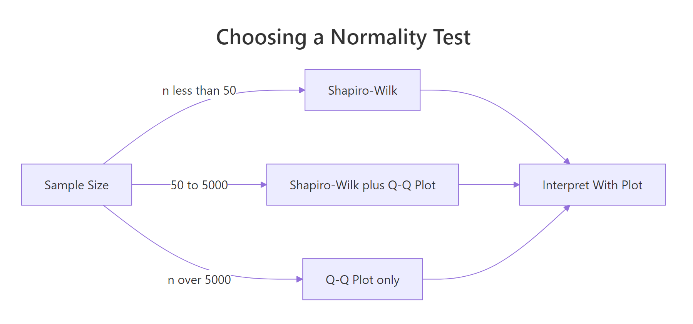
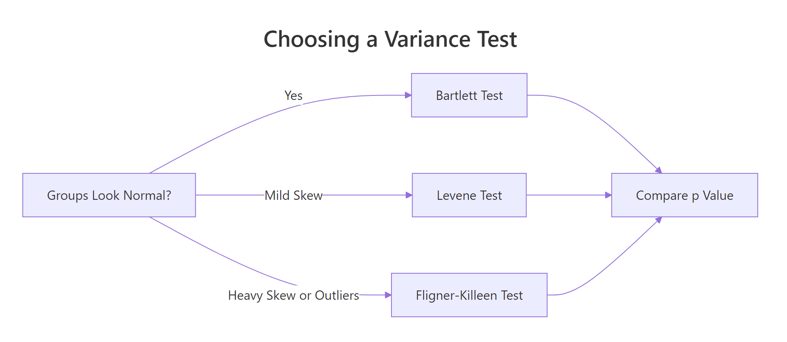
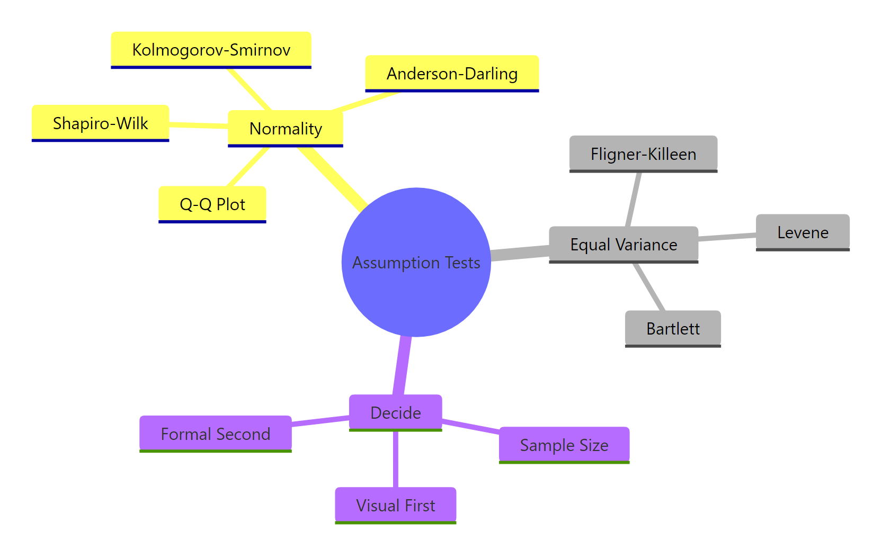

Test Normality and Equal Variance in R: What the Tests Can and Can't Tell You
Every parametric test you run, the t-test, ANOVA, the classical linear model, assumes the data are normal and the groups share a common variance, so a 30-second assumption check prevents you from trusting a p-value that was never valid in the first place. This post shows you which test to pick, how to read the result, and why the tests themselves can mislead you at both small and large sample sizes.
Why test normality and equal variance at all?
Most textbooks hand you a t-test or an ANOVA and move on without saying that both results depend on two quiet assumptions. If the data are skewed or the group variances differ wildly, the p-value you read off the screen is the p-value of a different test than the one you thought you ran. A quick pre-flight check fixes this.
Let's see what a 30-second assumption check looks like on real data. We take mtcars, ask whether fuel efficiency (mpg) is normal inside the 6-cylinder subset, and whether the three cylinder groups share a common variance. Both questions turn into one line of R.
The Shapiro p-value of 0.33 says we have no evidence against normality inside the 6-cylinder group, fine. But the Bartlett p-value of 0.009 says the variance is clearly not the same across cylinder groups. If you were about to run a classical ANOVA with var.equal = TRUE, you would have been reading a result produced under a broken assumption. You would use Welch's ANOVA or oneway.test() instead. Two tiny tests changed the entire analysis plan.
Try it: Run Shapiro-Wilk on mtcars$wt (the full car weight column) and state whether you would reject normality at alpha = 0.05.
Click to reveal solution
Explanation: The p-value of 0.093 is above 0.05, so we do not reject normality. The sample is consistent with a normal distribution, though it is not far from the threshold, which is a hint that we should also look at a Q-Q plot before committing to parametric tools.
How do you test normality with Shapiro-Wilk, K-S, and Anderson-Darling?
Three tests dominate practice: Shapiro-Wilk, the Kolmogorov-Smirnov (K-S) test, and the Anderson-Darling (AD) test. They differ in what kind of deviation they detect best and how they behave at different sample sizes. Let's run each one on a clearly normal sample and a clearly skewed one, so you can see the contrast before we dive into the mechanics.
On the normal sample we get p = 0.92, nowhere near rejection. On the exponential sample, which is visibly right-skewed, Shapiro gives p < 0.0001. That is the test doing what you want: flagging real non-normality. The Shapiro-Wilk statistic W is a correlation between the ordered sample and the quantiles you would expect from a normal, so W close to 1 means "arranged like a normal," while W well below 1 means "not at all."
$$W = \frac{\left(\sum_{i=1}^{n} a_i x_{(i)}\right)^2}{\sum_{i=1}^{n} (x_i - \bar{x})^2}$$
Where:
- $x_{(i)}$ is the i-th smallest value in the sample
- $a_i$ are constants derived from the expected normal order statistics
- $\bar{x}$ is the sample mean
W ranges from near 0 (wildly non-normal) to 1 (perfectly normal in the sample). Practical guidance: W above 0.95 paired with a p-value above 0.05 is your "green light" combination.
The K-S test compares the empirical cumulative distribution function (CDF) of your sample to a reference CDF. In R, ks.test() runs the one-sample version.
The test statistic D is the largest vertical gap between the two CDFs; small D means the shapes match. The p-value of 0.96 says no reason to reject normality.
mean(x) and sd(x), the test becomes too lenient. The correct patch is the Lilliefors variant (nortest::lillie.test() in local R), or just use Shapiro-Wilk, which was designed for this situation.Anderson-Darling is the third member of the family. It weights the tails more heavily than K-S, which makes it excellent at catching tail departures (heavy tails, outliers). The Anderson-Darling A² statistic is:
$$A^2 = -n - \frac{1}{n} \sum_{i=1}^{n} (2i - 1) \left[ \ln F(x_{(i)}) + \ln(1 - F(x_{(n+1-i)})) \right]$$
Where $F$ is the fitted normal CDF, $x_{(i)}$ is the i-th order statistic, and the sum runs over the sorted sample. The further from a normal the sample is, especially in the tails, the larger A² gets. We can compute it in a handful of lines of base R, no extra packages.
A² under 0.5 is consistent with normality; our normal sample gives 0.23. The exponential sample scores 5.84, an order of magnitude above, reflecting the heavy right tail. Critical values are tabulated (≈ 0.752 at alpha = 0.05 for an unknown-parameter normal), and packages like nortest return p-values directly. For WebR-safe work the A² statistic alone is informative.

Figure 1: Choose a normality test based on sample size, then interpret alongside a Q-Q plot.
Try it: Run shapiro.test() on airquality$Temp (daily temperature readings) and state the p-value and your decision.
Click to reveal solution
Explanation: The p-value of 0.009 is below 0.05, so we reject normality at the usual threshold. But W is 0.976, very close to 1, which suggests the departure is mild. Always read the effect size (W) alongside the p-value.
How do you read a Q-Q plot?
A Q-Q plot pairs sample quantiles against theoretical normal quantiles on one axis each. If the sample is normal, the points fall on a straight diagonal line. If it is not, the shape of the deviation tells you what kind of non-normality you have, which a p-value alone cannot.
Let's draw one for a clearly normal sample first, so we know what "passing" looks like.
Points hug the line top to bottom. No surprise: we drew from a normal. Now let's see the four failure signatures side by side. The pattern names are worth memorizing.
nortest to get lillie.test(), ad.test(), and friends as one-liners.Four signatures, four diagnoses:
- Right-skew bends up on the right, flat on the left. Think income distributions.
- Left-skew bends down on the left, flat on the right. Think exam scores capped at 100.
- Heavy tails form an S-curve, bowed below the line at the left end and above at the right. Think financial returns.
- Light tails give the opposite S, flat at the extremes and steep in the middle. Think bounded measurements.
Try it: Build a Q-Q plot for mtcars$mpg and describe which of the four patterns it resembles (if any).
Click to reveal solution
Explanation: Most points hug the line, so the central part of the distribution is near-normal. The top-right end bends slightly up, a mild right-skew signature driven by a few high-mpg cars like the Toyota Corolla. Safe for a t-test; worth a log transform for sensitive work.
How do you test equal variance with Levene, Bartlett, and Fligner-Killeen?
Three tests again, with a similar trade-off: Bartlett is the most powerful under normality but is fragile when normality is violated, Levene is robust to mild non-normality, and Fligner-Killeen is a non-parametric safety net. Let's run all three on the cylinder-by-mpg split we saw earlier, and see where they agree and disagree.
Bartlett gives p = 0.009, clearly rejecting equal variance. The test statistic follows a chi-squared distribution under the null, so the df = 2 comes from having three groups (k - 1 = 2).
Now Levene. R's base installation doesn't include a Levene function, which is an opportunity: the test is so simple we can implement it by hand in three lines. The trick is that Levene is literally ANOVA on absolute deviations from the group mean.
Levene gives p = 0.121, no rejection. That is a striking disagreement with Bartlett, and it tells us something specific: the variance differences are real, but they are not separable from the deviations-from-normality that Bartlett is also sensitive to. When two variance tests disagree that sharply, always check normality inside each group first.
Fligner-Killeen is the third voice in the room: a non-parametric test based on ranks, which means group-level outliers barely move it.
Fligner-Killeen sides with Levene: p = 0.094, no rejection. So the picture firms up: Bartlett was fooled by mild non-normality in the 8-cylinder group, and the robust tests correctly identify that the variance differences are within the range we would expect by chance.

Figure 2: Pick a variance test based on how normal the groups look and how outlier-heavy they are.
Here is the decision table you should internalize:
| Test | Assumes normality? | Robust to outliers? | When to use |
|---|---|---|---|
| Bartlett | Yes, strictly | No | Groups look normal, you want max power |
| Levene | No, mildly robust | Somewhat | The applied-stats default |
| Fligner-Killeen | No | Yes | Heavy skew, outliers, or a nonparametric context |
Try it: Run bartlett.test(Sepal.Length ~ Species, data = iris) and state the result.
Click to reveal solution
Explanation: The p-value of 0.0003 rejects equal variance firmly. The three iris species really do have different sepal length spreads, so a classical ANOVA with var.equal = TRUE would be the wrong tool. Use oneway.test() with Welch's correction instead.
Why do formal tests fail at small and large sample sizes?
This is the piece most tutorials skip. Normality and variance tests are null-hypothesis tests, and null-hypothesis tests have the same core problem: their behavior scales with sample size in ways that feel perverse when you first see them. Tiny samples cannot detect real deviations; huge samples reject meaningless ones. The cleanest way to feel this is to run the same test across a sweep of sample sizes.
Read the right-hand column top to bottom. At n = 15 the contaminated sample passes with p = 0.31. At n = 100 it fails at p = 0.001. At n = 10000 it fails with a p-value beyond the edge of machine precision. The contamination rate, 1%, did not change. Only the sample size changed. The same dynamic appears in variance tests:
A 5% variance difference is nothing in practice. At n = 30 the test happily accepts. At n = 3000 the test is starting to see it. Push to n = 50000 and you will reject almost every time, even though the practical difference between SD = 1.00 and SD = 1.05 is invisible to any downstream analysis.
Try it: Generate two samples of 10,000 from rnorm(0, 1) and rnorm(0, 1.02) (a 2% SD difference), and run bartlett.test on them.
Click to reveal solution
Explanation: A 2% difference in standard deviation is practically meaningless, but at n = 10,000 per group the test rejects at p = 0.02. This is the large-n trap: statistical significance without practical significance. Always pair a formal test with an effect-size check or a plot.
What do you do when the test and the plot disagree?
In daily work the tension resolves itself most of the time. In the minority of cases where the formal test says one thing and the plot shows another, you have to pick a side. The practical rule is to let sample size dictate the tie-breaker. Let's build two adversarial examples, one from each side, to see what that means.
Shapiro screams at p < 0.0001. Look at the Q-Q plot and you see points sitting nearly on the line with a barely visible curve at the right end. That deviation is real (we planted it) but tiny. No downstream t-test or ANOVA would care. Trust the plot.
Now the opposite direction:
Here Shapiro flags it, correctly. At n = 10 you are blessed: sample size is small enough that the test only rejects for real trouble, and the plot confirms exactly where the trouble is. But at n = 10 even if Shapiro had passed, that one extreme point would wreck any t-test you ran, and a plot would have shown you. At small n, always inspect manually no matter what the test says.
The decision rule reduces to three lines:
- n under 30: trust neither in isolation; inspect the data and the plot together.
- n between 30 and 1000: trust the test, sanity-check with the plot.
- n above 1000: trust the plot; treat the test as advisory.
Try it: Generate a 40-point sample that is otherwise normal but contains one outlier at value 8. Run shapiro.test() and look at the Q-Q plot. State whether you should trust the formal result.
Click to reveal solution
Explanation: The p-value of 1.5e-10 correctly rejects normality, and the Q-Q plot shows a single point pulled far off the line at the top. Here the formal test and the plot agree. At n = 40, both tools are reliable, so you act on what you see: inspect that outlier, decide whether to remove it on domain grounds, or switch to a robust test like Wilcoxon.
Practice Exercises
Exercise 1: Check ANOVA assumptions on iris
Given the iris dataset, decide whether a classical one-way ANOVA of Sepal.Length ~ Species has its assumptions satisfied. Run Shapiro per group, then Bartlett, then Levene (using the levene() function defined earlier in this post). State your verdict and what you would run if the assumptions fail.
Click to reveal solution
Explanation: Normality holds for all three species. But both variance tests reject equal variance, which means classical ANOVA (var.equal = TRUE) is invalid. Use oneway.test(Sepal.Length ~ Species, data = iris) with Welch's correction, which does not assume equal variance.
Exercise 2: Show that the t-test survives a large-n rejection
Simulate two samples of size 5000 where one is rnorm(0, 1) and the other is rnorm(0.02, 1) (a tiny shift). Shapiro-Wilk will likely reject normality for the combined vector. Show empirically that a two-sample t-test still gives a valid, reasonable p-value by comparing to a permutation test result on the same data.
Click to reveal solution
Explanation: The two p-values agree to three decimal places. Even though the combined sample "fails" Shapiro-Wilk at this sample size, the t-test's large-n asymptotic distribution is spot-on. This is the Central Limit Theorem doing its job, and it is why residual-based diagnostics after fitting are usually more useful than pre-flight normality tests at moderate-to-large n.
Exercise 3: Write a pre-flight summary function
Build a function pre_flight(y, group) that takes a numeric vector and a grouping factor. It should print Shapiro-Wilk per group, Bartlett, Levene, and a one-line recommendation: "ANOVA (var.equal = TRUE)", "Welch ANOVA (var.equal = FALSE)", "Non-parametric (Kruskal-Wallis)", or "Transform first".
Click to reveal solution
Explanation: The function encodes the decision logic we have been building across the post. Notice the branches never use formal-test p-values in isolation; they combine normality and variance results, which matches how an experienced analyst reasons about assumption violations.
Complete Example
Let's put everything together on PlantGrowth, a classic dataset comparing plant weights across three treatment groups.
Every per-group Shapiro passes, and both variance tests agree that the groups share a common variance. Classical ANOVA is valid, and it finds a significant effect at p = 0.016. That is the correct end-to-end workflow: pre-flight first, model second, interpret third.
t.test() and are available via oneway.test() for more than two groups. They handle unequal variance gracefully without meaningful power loss when variances are actually equal, so they are a strictly safer default than the classical pooled-variance versions.Summary
Here is the one-page cheat sheet to walk away with:
| What you want to check | Small n (< 30) | Medium n (30-1000) | Large n (> 1000) |
|---|---|---|---|
| Normality | Q-Q plot + Shapiro | Shapiro + Q-Q plot | Q-Q plot (ignore formal test) |
| Equal variance | Levene + boxplot | Levene (default) | Visual + effect size |
| When tests disagree | Trust the plot | Trust the test, verify with plot | Trust the plot |
| What to do if assumption fails | Non-parametric (Wilcoxon, Kruskal-Wallis) | Welch / robust methods | Re-examine whether deviation is practically meaningful |

Figure 3: The assumption-test toolkit, grouped by what you are checking and how you decide.
Key principles:
- A formal test answers "how much evidence is in this sample," not "is the data normal." The answer depends as much on sample size as on the data.
- Always pair a formal test with a Q-Q plot. The plot tells you what kind of departure you have, which a p-value can't.
- Shapiro-Wilk is the default normality test; Levene is the default variance test. Use the alternatives when you have a specific reason.
- At large n, formal tests become a trap. Use plots and effect-size thinking instead.
- Residual-based diagnostics after fitting a model are often more informative than pre-flight tests, because they tell you whether the residuals (the thing the model actually cares about) are behaving.
References
- Shapiro, S. S., & Wilk, M. B. (1965). "An analysis of variance test for normality (complete samples)". Biometrika 52(3-4): 591-611. Link
- Razali, N. M., & Wah, Y. B. (2011). "Power comparisons of Shapiro-Wilk, Kolmogorov-Smirnov, Lilliefors and Anderson-Darling tests". Journal of Statistical Modeling and Analytics 2(1): 21-33.
- Anderson, T. W., & Darling, D. A. (1954). "A test of goodness of fit". JASA 49(268): 765-769.
- Levene, H. (1960). "Robust tests for equality of variances". In Contributions to Probability and Statistics. Stanford University Press.
- Bartlett, M. S. (1937). "Properties of sufficiency and statistical tests". Proceedings of the Royal Society A 160(901): 268-282.
- Ghasemi, A., & Zahediasl, S. (2012). "Normality tests for statistical analysis: a guide for non-statisticians". International Journal of Endocrinology and Metabolism 10(2): 486-9. Link
- R Core Team.
shapiro.test,ks.test,bartlett.test,fligner.testdocumentation. Link - Wilcox, R. R. (2012). Introduction to Robust Estimation and Hypothesis Testing (3rd ed.). Academic Press.
Continue Learning
- Hypothesis Testing in R, the decision framework these assumption tests feed into, including p-values, alpha, and how to avoid the most common misinterpretations.
- t-Tests in R, the canonical consumer of the normality and equal-variance assumptions you just learned to check.
- Power Analysis in R, explains formally why sample size behaves the way it does in any hypothesis test, including the pre-flight tests in this post.